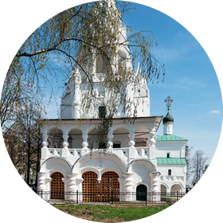

Церковь Рождества Христова
|

фотографии
|

план храма
|
Невдалеке от церкви Николы Надеина, в соседнем квартале, расположена церковь Рождества Христова, построенная купеческой семьёй Гурьевых-Назарьевых, «государевых гостей», о чём повествует редчайший и очень дорогой в исполнении майоликовый фриз с длинной надписью, опоясывающий церковь в верхней части: «Лета 7152 поставлена сия церковь во имя Рождества Господа Бога и Спаса нашего Иисуса Христа при державе государя царя и великого князя Михаила Феодоровича всея России самодержца и при митрополите Варлааме ростовском и ярославском, а воздвигнули сию церковь Анкидин по прозвищу Дружина да Гурей Назарьевы дети по своим душам и по своих родителей, а совершали церковь сию после отца своего Гурья Назарьева дети его Михайло да Андрей да Иван по своих душах и родителях на воспоминания вечных благ и совершена сия церковь и освящена осьмые тысячи 152 году месяца августа в 28 день». Основное строительство длилось около десяти лет (1635–1644), затем храм ещё перестраивался.
Среди ярославских храмов церковь Рождества особенно интересна своим архитектурным ансамблем, в который входит и отдельно стоящая звонница, в былые времена соединённая с церковью. Сама церковь стала одной из первых в городе, где складывался тип ярославской архитектурной композиции: центральный объём храма, окружённый с трёх сторон галереей, которая, в свою очередь, имеет на востоке завершение — приделы. Кроме северо-восточного Никольского и юго-восточного придела в честь Пяти персидских мучеников (в том числе и небесного покровителя одного из братьев Назарьевых — Анкидина), были ещё приделы Петра и Павла (под Никольским), Иоакима и Анны (в самой церкви) и Казанский (юго-западный; в честь того, что в этом месте в 1609 году ярославцы прятали икону Казанской Богоматери во время осады города поляками). Над Казанским приделом установлен тонкой работы корсунский крест XVIII века (корсунскими подобные кресты называли по названию города Корсуни — Херсонеса, откуда они получили своё распространение). В наружном архитектурном убранстве церкви, так же как и внутри, для облицовки печей впервые были использованы муравленые, то есть зелёные, как трава-мурава, изразцы; те, что мы видим на церкви сейчас, — большей частью воссозданы в ходе реставрации церкви во второй половине XX века.
Особое внимание стоит уделить кружевной колокольне с большим шатром в центре и двумя малыми, подчёркивающими вертикальное устремление всей постройки. Пропорции, которые мы видим сейчас, несколько отличаются от первоначальных, ещё более лёгких. Сама Христорождественская церковь стоит сейчас почти на метр ниже земли — за почти четыре века так поднялся культурный слой. Ещё одна интересная особенность — переход от Казанского придела к приделу Пяти мучеников с аркой и стеной галереи, отходящей непосредственно от апсиды. Это результаты многочисленных перестроек и добавления новых элементов, не предусмотренных с самого начала, — следы жизни памятника в течение веков.
Внутри церкви, кроме росписей 1683 года в центральном объёме храма, предположительно выполненных ярославскими мастерами Дмитрием Семёновым и Фёдором Игнатьевым (в данном случае своих автографов художники не оставили), и более поздних росписей других частей, обратите внимание на временно хранящиеся здесь на галерее снятые со стен разрушенных ярославских церквей фрески.